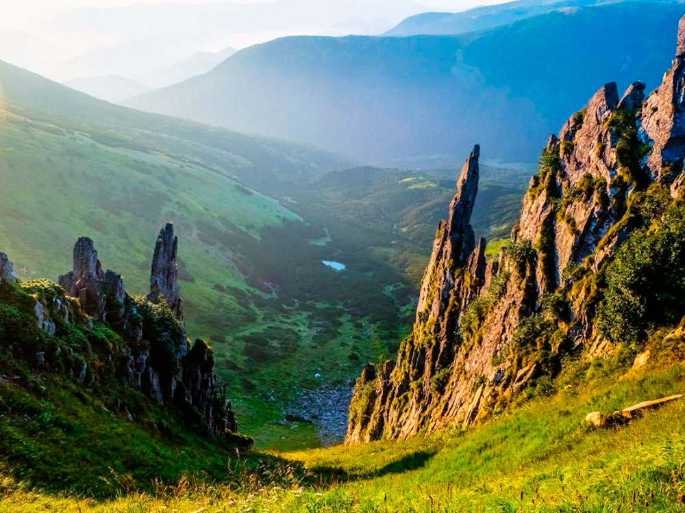
Чорногірський хребет
Шпиці
Вражаючий трек Чорногорою до величних кам'яних веж
- Відстань
- 12 км
- Набір висоти
- 850 м
- Час
- 6–7 год
Знайди похід, який відповідатиме твоєму досвіду та бажанням
Рівень складності:

Вражаючий трек Чорногорою до величних кам'яних веж
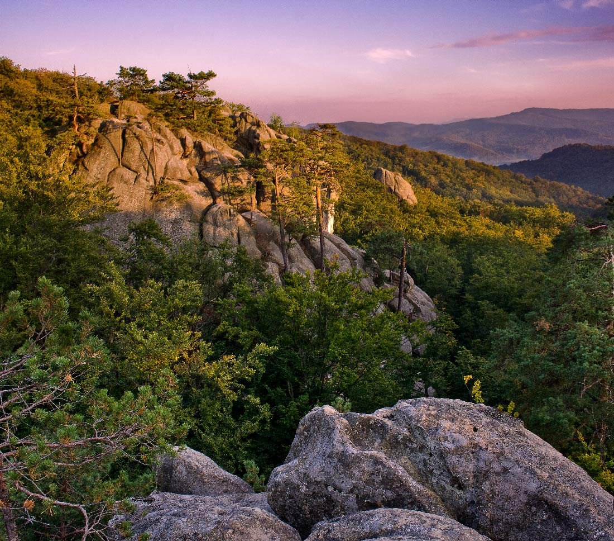
Атмосферна прогулянка буковим лісом до гігантських скельних лабіринтів та печер.
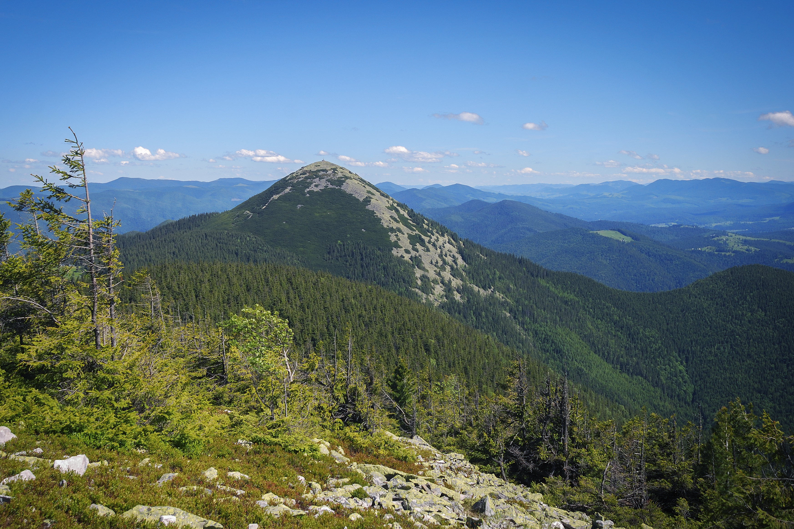
Класичний маршрут крізь смерековий ліс та кам’яні розсипи на вершину з панорамою Чорногори.
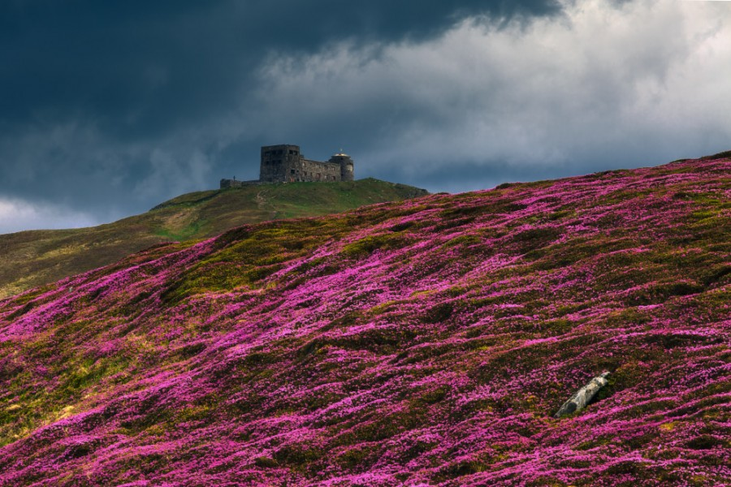
Тривалий високогірний трек до старовинної кам’яної обсерваторії «Білий Слон» на висоті 2028 м.
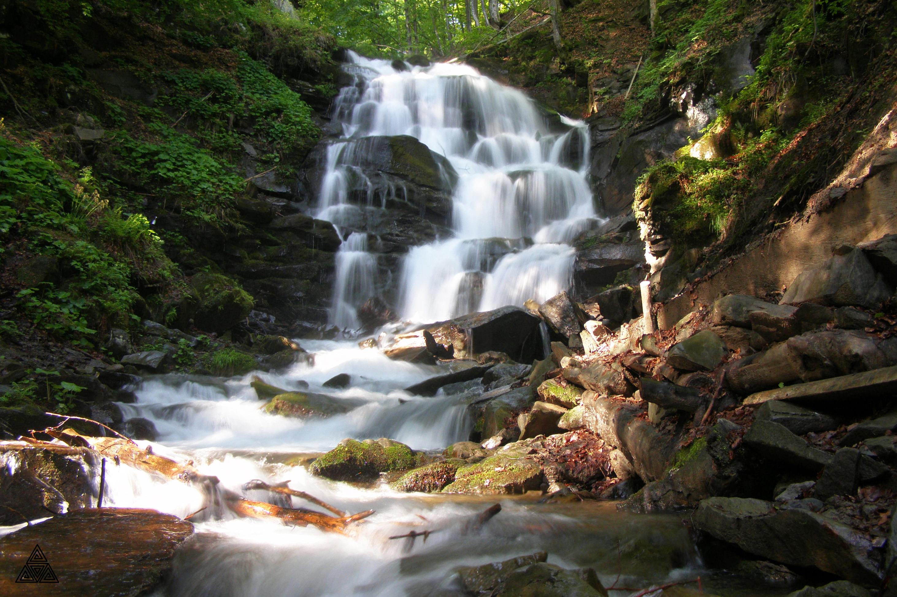
Короткий маршрут уздовж гірського потоку до одного з наймальовничіших водоспадів Карпат.

Мальовничий маршрут через високогірне озеро з виходом на гребінь
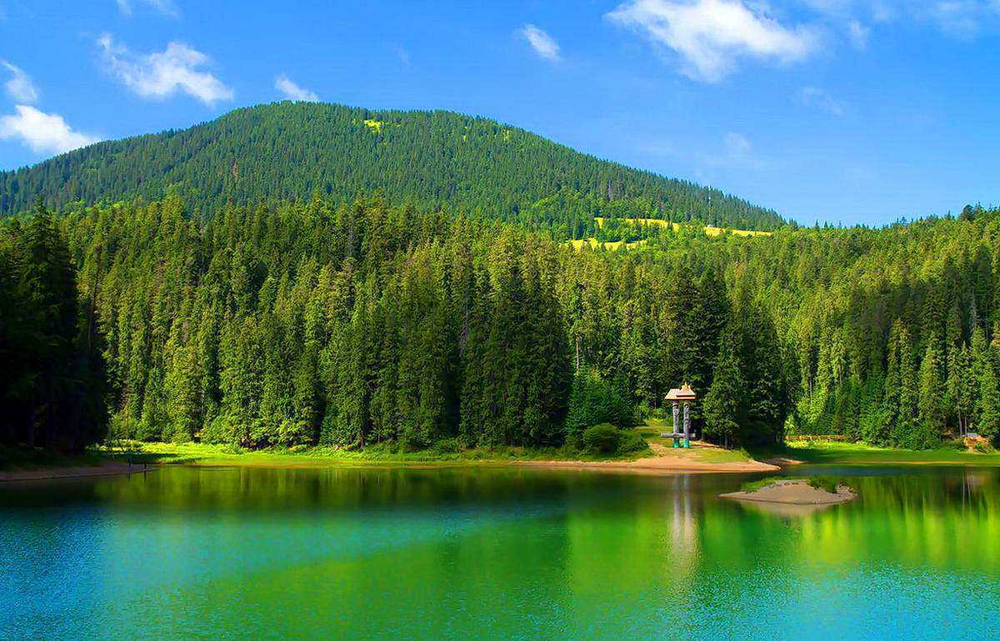
Спокійна лісова дорога навколо найбільшого високогірного озера України з оглядовими майданчиками.
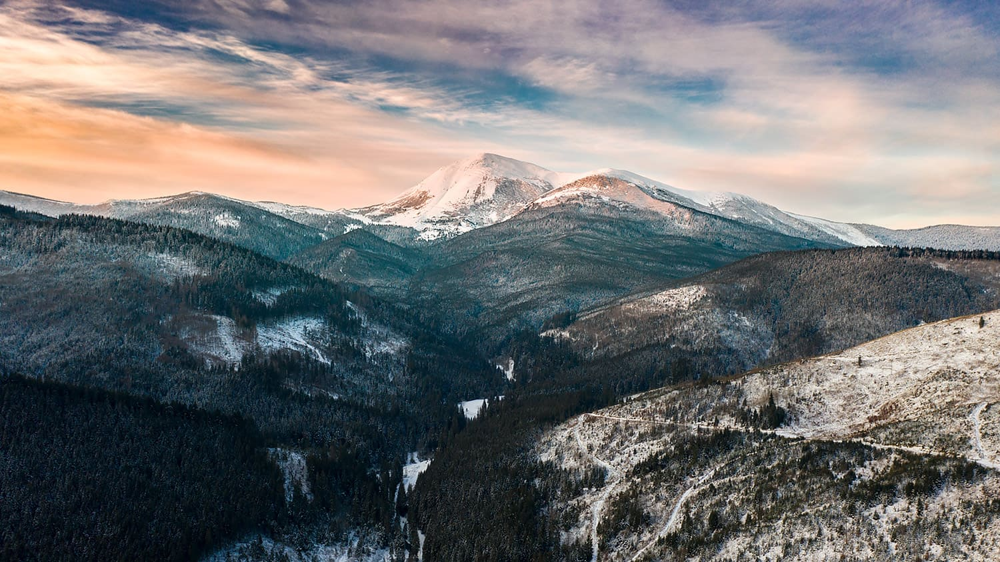
Стрімкий та видовищний підйом на один із найнеприступніших двотисячників українських Карпат.
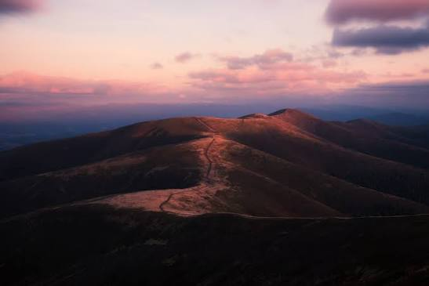
Панорамний маршрут відкритими хребтами з чорничниками та краєвидами на Закарпаття.
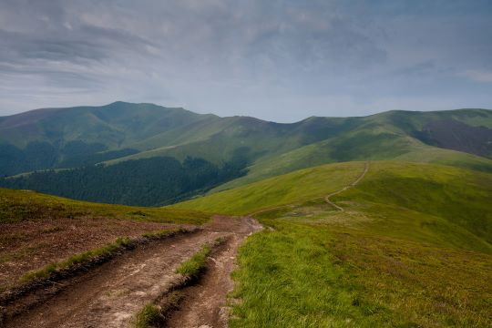
Неспішна стежка відкритими схилами з краєвидами на карпатські хребти.
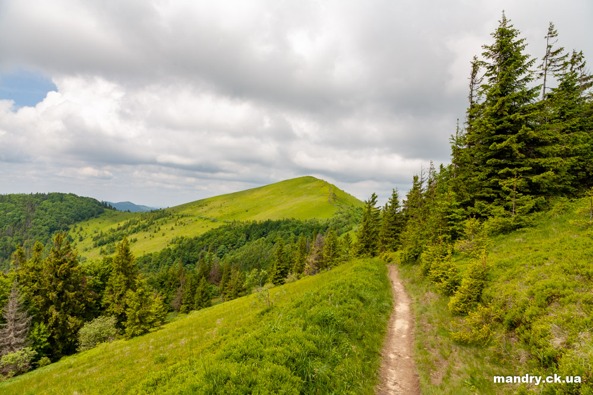
Насичений підйом хребтом на найвищу точку Львівщини з безкраїми краєвидами на Бескиди.
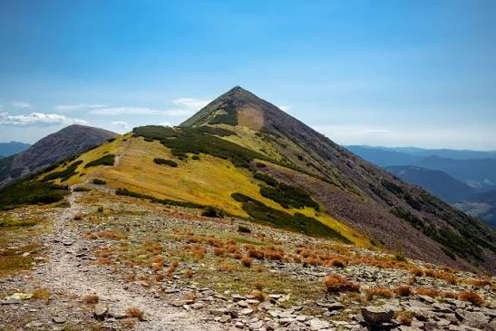
Суворий маршрут крізь дикі праліси та віковічні кам’яні осипи (ґреґоти) до серця Горган.
За вибраними рівнями складності маршрутів не знайдено.